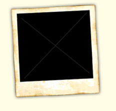

Day: 1 ~ Leh to Shang Sumdo via Martselang (2½ hours)
We will leave Leh by jeep to the starting point of the trek at
Martselang (3600 m). Along the way, we will visit the first Palace of
Ladakh at Shey, following the famous Yellow Sect monastery of Thikse,
which houses one of the largest Buddha statues in Ladakh (called the
future Buddha). We will then visit Hemis, the largest and most famous
Drukpa monastery in Ladakh (built in the early 17th century). After the
tour, we will drive to Martselang, where we will meet our crew.
Martselang is the entry point into Hemis National Park, where we might
get glimpses of such endangered high-altitude animals such as the snow
leopard, Tibetan wolf, Tibetan sheep and Golden eagle. From there, we
will walk for 2 ½ hours to the small village of Shang Sumdo (3700 m).
Day: 2 ~ Shang Sumdo 3700 m. - Lartsa 4600m. (6 hrs)
Today we will climb steadily through the gorge of Shang, enjoying the
magnificent colors and rock formations on view. We will then pass
through the small village of Chogdo (4000 m) and cross a few rivers
before reaching camp for the night.
Day: 3 ~ Lartsa 4600 m. - Thachungtse 4250 m via Kongmaru La 5200m. (6-7 hrs)
A steep ascent leads us up to Kongmaru La (5200 m). From the pass we
will get a breathtaking view of the north face of Kangyatse (6400 m),
Zanskar and the Karakoram ranges. We then descend gradually to the
summer pasture of Nimaling, where the villagers from Marka valley spend
the summer with their sheep, goats and yaks, which graze on this lush
greenery. The campsite of Thachungtse is further down the valley on the
bank of the Marka River at 4000 m.
Day: 4 ~ Thachungtse – Yakrupal (5-6 hours)
After yesterday’s strenuous walk, today is easier as we walk through
the remote Langthang valley, where few other trekkers go. It’s only the
villagers from Markha, who use this valley as a pasture ground for
their animals. From Thachungtse, we will follow the valley down until
it divides, cross the river and follow the valley to the left along the
Langthang Chu River. The valley down to the right leads to Markha. The
Langthang River has a tendency to rise during the day due to the
melting of snow in the mountains, and by noon it becomes a dangerous
river to cross. An early start in the morning is therefore essential,
as one has to cross the river several times.
Yakrupal is a nice, green campsite where both the horses and we will have a good meal.
Day: 5 ~ Yakrupal – Zalung Karpo La 5200m – Khar (5-6 hours)
After Yakrupal, we will continue up the valley towards the pass of
Zalung Karpo La. From the top of the pass there is a spectacular view
of the Zanskar range on one side, while on the other, the highest
plateau in the world appears: the Chang Tang plateau stretching far
into Tibet , known as the land of the nomads. The trail down is steep
and several river crossings will follow to the beautiful and lush
campsite of Khar, which will be our home for tonight.
Kharnak means “black castle” in Ladakhi, and, situated on a hill above
the campsite, one can imagine the former palace of Khar where the king
of Kharnak used to live. The ruins of this former kingdom still stand,
and the nomads believe it to be haunted. It is said that the nomads in
Dat are descendants of the people who lived in Khar and that they for
some reason moved to Dat three or four generations ago.
Day: 6 ~ Khar – Dat (5-6 hours)
Relatively an easy day and a beautiful walk through the wide and
lush valleys (by Ladakhi standards!).
At Tangtse Sumdo the valley divides – the left valley leading to Dat
and the right into Zanskar, by the ‘Zhunglam trek’, where one will get
one’s feet real wet due to the 80 river crossings! On the way we pass
several nomad camps before reaching the tiny village of Dat , a
settlement of stone huts and the winter headquarters for the nomads in
Kharnak. Here they live from October to December and March to June. The
nomads of Kharnak are a colorful and joyful people moving together with
their yaks and pashmina goats. In Dat there is also a Monastery, and
when the villagers are away from Dat, one or two people ride back on
horses every second day to light the candle here.
Day: 7 ~ Dat – Yar La 4950m – Lungmo Che (5-6 hours)
From Dat we enter the vast land of the Changthang plateau and follow a
long, wide valley before taking one of the side valleys towards Yar La.
In spring the nomads move with all their animals towards Zara and it
can be an unforgettable sight to see 30-40 families moving with their
yaks in caravans. It is an easy ascent to this pass. From here it is a
short walk down to the pastures of Lungmo Che, where we will spend the
night, surrounded by snowcapped mountains, grazing yaks and pastel
light.
Day: 8 ~ Lungmo Che – Zara (5 hours)
The trail follows rolling hills towards Yagang, another settlement of
stone huts belonging to the Kharnak nomads. A jeep road continues to
Zara, the summer headquarters for the nomads in Kharnak. If you go for
a visit up here, you will most likely be welcomed with numerous cups of
butter tea and probably be invited into the nomads’ black tents woven
out of yak hair.
Day: 9 ~ Zara – Leh (5 hours)
It will feel sad to leave this fascinating world, but it is time to
return to Leh. From Zara the drive takes us back over the Taklangla
pass, the second highest pass in the world.
 |